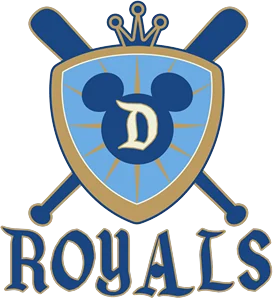

High Minors · 1B
Stefan Bailie
- Team
 Disneyland Royals
Disneyland Royals- Organization
- Anaheim Angels
- Position
- 1B
- Bats/Throws
- R/R
- Height/Weight
- 6'0", 212 lb
- Born
- May 16, 1980 in Richland, WA
- Age
- 21
- Uniform
- #3
2002 batting
| Team | Lg | G | PA | AB | R | H | 2B | 3B | HR | RBI | BB | K | SB | AVG | OBP | SLG | OPS |
|---|---|---|---|---|---|---|---|---|---|---|---|---|---|---|---|---|---|
| Fred | Low Minors | 14 | 30 | 26 | 2 | 6 | 1 | 0 | 0 | 1 | 3 | 7 | 2 | .231 | .310 | .269 | .580 |
2002 batting, advanced
| Team | Lg | PA | Pit/PA | SH | SF | HBP | IBB | GIDP | CS | OPS+ | ISO | BABIP | BB% | K% | WPA | UBR | WAR |
|---|---|---|---|---|---|---|---|---|---|---|---|---|---|---|---|---|---|
| Fred | Low Minors | 30 | 3.70 | 1 | 0 | 0 | 0 | 1 | 0 | 49 | .038 | .316 | 10.0% | 23.3% | -0.24 | -1.6 | -0.3 |
Streaks
Longest hitting streak: 3 games (Apr 2 to Apr 7); current: none
Longest on-base streak: 4 games (Apr 2 to Apr 8)
Batting splits
| Split | G | PA | AB | R | H | 2B | 3B | HR | RBI | BB | K | SB | AVG | OBP | SLG | OPS | ISO | BABIP | BB% | K% |
|---|---|---|---|---|---|---|---|---|---|---|---|---|---|---|---|---|---|---|---|---|
| vs LHP | 6 | 9 | 7 | 0 | 0 | 0 | 0 | 0 | 0 | 1 | 2 | - | .000 | .125 | .000 | .125 | .000 | .000 | 11.1% | 22.2% |
| vs RHP | 10 | 21 | 19 | 2 | 6 | 1 | 0 | 0 | 1 | 2 | 5 | - | .316 | .381 | .368 | .749 | .053 | .429 | 9.5% | 23.8% |
| Home | 6 | 14 | 11 | 0 | 2 | 0 | 0 | 0 | 1 | 3 | 4 | 1 | .182 | .357 | .182 | .539 | .000 | .286 | 21.4% | 28.6% |
| Road | 8 | 16 | 15 | 2 | 4 | 1 | 0 | 0 | 0 | 0 | 3 | 1 | .267 | .267 | .333 | .600 | .067 | .333 | 0.0% | 18.8% |
By month
| Month | G | PA | AB | R | H | 2B | 3B | HR | RBI | BB | K | SB | AVG | OBP | SLG | OPS | ISO | BABIP | BB% | K% |
|---|---|---|---|---|---|---|---|---|---|---|---|---|---|---|---|---|---|---|---|---|
| April | 14 | 30 | 26 | 2 | 6 | 1 | 0 | 0 | 1 | 3 | 7 | 2 | .231 | .310 | .269 | .580 | .038 | .316 | 10.0% | 23.3% |
Situational
| Situation | PA | AB | H | 2B | 3B | HR | RBI | BB | K | AVG | OBP | SLG | OPS |
|---|---|---|---|---|---|---|---|---|---|---|---|---|---|
| Bases empty | 9 | 7 | 2 | 1 | 0 | 0 | 0 | 2 | 0 | .286 | .444 | .429 | .873 |
| Runners on | 21 | 19 | 4 | 0 | 0 | 0 | 1 | 1 | 7 | .211 | .250 | .211 | .461 |
| Runners in scoring position | 14 | 12 | 2 | 0 | 0 | 0 | 1 | 1 | 4 | .167 | .231 | .167 | .397 |
| RISP, two outs | 3 | 3 | 0 | 0 | 0 | 0 | 0 | 0 | 1 | .000 | .000 | .000 | .000 |
| Innings 1-3 | 8 | 8 | 2 | 0 | 0 | 0 | 0 | 0 | 2 | .250 | .250 | .250 | .500 |
| Innings 4-6 | 6 | 5 | 0 | 0 | 0 | 0 | 0 | 0 | 3 | .000 | .000 | .000 | .000 |
| Innings 7-9 | 15 | 12 | 4 | 1 | 0 | 0 | 1 | 3 | 2 | .333 | .467 | .417 | .883 |
| Extra innings | 1 | 1 | 0 | 0 | 0 | 0 | 0 | 0 | 0 | .000 | .000 | .000 | .000 |
Situational splits are rebuilt from every plate appearance in the export (base/out state when the PA began). "RBI" counts runs batted in on that PA.
2002 batting game log
| Date | Opp | Score | Pos | Bat | PA | AB | R | H | 2B | 3B | HR | RBI | BB | K | SB | CS | HBP | GIDP | WPA |
|---|---|---|---|---|---|---|---|---|---|---|---|---|---|---|---|---|---|---|---|
| Apr 20 | @RedSt | W 5-4 | PH | 9 | 1 | 1 | 0 | 0 | 0 | 0 | 0 | 0 | 0 | 0 | 0 | 0 | 0 | 0 | -0.029 |
| Apr 18 | @RedSt | L 2-7 | PH | 9 | 1 | 1 | 1 | 1 | 0 | 0 | 0 | 0 | 0 | 0 | 1 | 0 | 0 | 0 | 0.058 |
| Apr 16 | vsYALL | L 6-9 | 1B | 6 | 5 | 4 | 0 | 1 | 0 | 0 | 0 | 0 | 1 | 1 | 0 | 0 | 0 | 0 | 0.004 |
| Apr 14 | @BHil | W 5-3 | PH | 9 | 1 | 1 | 0 | 0 | 0 | 0 | 0 | 0 | 0 | 0 | 0 | 0 | 0 | 0 | -0.007 |
| Apr 13 | @BHil | W 7-6 | 1B | 9 | 2 | 2 | 0 | 1 | 0 | 0 | 0 | 0 | 0 | 1 | 0 | 0 | 0 | 0 | -0.056 |
| Apr 12 | @BHil | L 2-3 | PH | 3 | 1 | 1 | 0 | 0 | 0 | 0 | 0 | 0 | 0 | 0 | 0 | 0 | 0 | 0 | -0.101 |
| Apr 10 | vsLIDu | L 2-4 | PH | 8 | 1 | 1 | 0 | 0 | 0 | 0 | 0 | 0 | 0 | 0 | 0 | 0 | 0 | 0 | -0.029 |
| Apr 9 | vsLIDu | W 6-5 | 1B | 7 | 4 | 4 | 0 | 0 | 0 | 0 | 0 | 0 | 0 | 2 | 0 | 0 | 0 | 0 | -0.091 |
| Apr 8 | vsLIDu | L 4-5 | PH | 9 | 1 | 0 | 0 | 0 | 0 | 0 | 0 | 1 | 1 | 0 | 0 | 0 | 0 | 0 | 0.151 |
| Apr 7 | @Chatt | L 6-7 | PH | 9 | 1 | 1 | 1 | 1 | 0 | 0 | 0 | 0 | 0 | 0 | 0 | 0 | 0 | 0 | 0.035 |
| Apr 4 | vsBrBl | W 3-2 | 1B | 0 | 0 | 0 | 0 | 0 | 0 | 0 | 0 | 0 | 0 | 0 | 0 | 0 | 0 | 0.000 | |
| Apr 3 | vsBrBl | L 1-8 | 1B | 5 | 3 | 2 | 0 | 1 | 0 | 0 | 0 | 0 | 1 | 1 | 1 | 0 | 0 | 0 | 0.044 |
| Apr 2 | @BaRo | L 1-3 | 1B | 4 | 5 | 5 | 0 | 1 | 1 | 0 | 0 | 0 | 0 | 1 | 0 | 0 | 0 | 0 | -0.085 |
| Apr 1 | @BaRo | L 0-4 | 1B | 4 | 4 | 3 | 0 | 0 | 0 | 0 | 0 | 0 | 0 | 1 | 0 | 0 | 0 | 1 | -0.134 |
2002 fielding by position
| Team | Lg | Pos | G | GS | Inn | TC | PO | A | E | DP | FPct | ZR | Arm | Framing | SB | CS | CS% | PB |
|---|---|---|---|---|---|---|---|---|---|---|---|---|---|---|---|---|---|---|
| Fred | Low Minors | 1B | 7 | 5 | 47.0 | 39 | 39 | 0 | 0 | 4 | 1.000 | -0.3 | - | - | - | - | - | - |
ZR (zone rating), Arm and Framing are OOTP's runs-above-average figures. SB/CS/CS% are base stealers against him as a catcher.
Career batting
| Year | Team | Lvl | G | PA | AB | R | H | 2B | 3B | HR | RBI | BB | K | SB | AVG | OBP | SLG | OPS | WAR |
|---|---|---|---|---|---|---|---|---|---|---|---|---|---|---|---|---|---|---|---|
| 2001 | T | Short-A | 23 | 99 | 90 | 9 | 21 | 4 | 0 | 2 | 15 | 6 | 21 | 0 | .233 | .303 | .344 | .647 | 0.4 |
| 2002 | Fred | Low Minors | 14 | 30 | 26 | 2 | 6 | 1 | 0 | 0 | 1 | 3 | 7 | 2 | .231 | .310 | .269 | .580 | -0.3 |
Seasons before 2002 are the player's real-life record, listed under the franchise that holds that history in this universe. "Top level" totals count major-league-level seasons only.
Service time & contract status
- Service time
- 0.000 (0 days; 0 this season)
- Status
- Pre-Arb
- Arbitration
- Not projected
- Free agency
- Not projected
- Options
- 0 used, 3 remaining (of 3)
No projection: no major-league service yet and not on an MLB, ABL or FBL roster.
Service time is Y.DDD: major-league service years plus days toward the next year (172 days = 1 year, from the league rules). Status follows the league rules: under 3 years Pre-Arb, 3 to 5 years Arb 1/2/3, 6+ years FA-eligible. The export's arbitration_offering is 0 and no player has gone through arbitration yet (has_received_arbitration is 0 for everyone), so these statuses come from the rules, not from hearings. Projected years assume a full major-league season of service every year from 2002 on.
Most frequent matchups pitchers he has faced
| Pitcher | AB | H | HR | AVG |
|---|---|---|---|---|
| Jaime Navarro | 4 | 1 | 0 | .250 |
| Mike Meyer | 3 | 1 | 0 | .333 |
| Neal Frendling | 3 | 0 | 0 | .000 |
| Jarod Matthews | 2 | 1 | 0 | .500 |
| Efrain Valdez | 2 | 0 | 0 | .000 |
| Cesar Jimenez | 2 | 0 | 0 | .000 |
| Mark Guerra | 1 | 1 | 0 | 1.000 |
| Justin Huisman | 1 | 1 | 0 | 1.000 |
| Eric Hull | 1 | 1 | 0 | 1.000 |
| Ryan Carter | 1 | 0 | 0 | .000 |
| Sixto Baez | 1 | 0 | 0 | .000 |
| Jorge Torres | 1 | 0 | 0 | .000 |
| Sam Marsonek | 1 | 0 | 0 | .000 |
| A.J. Murray | 1 | 0 | 0 | .000 |
| Sergio Sanchez | 1 | 0 | 0 | .000 |